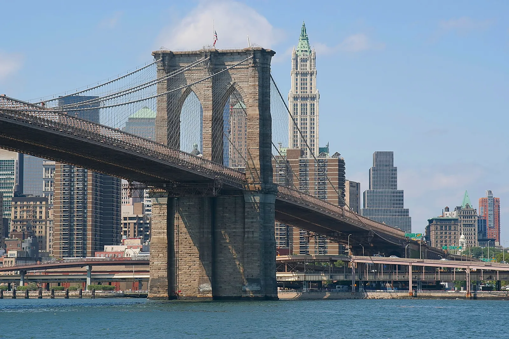

Is this a monument?
Project: Brooklyn Bridge
Location: New York, NY
NEXT
SUBMIT

Responses
Yes. Iconic representation of New York
Spencer on Decemeber 2, 2022
Yes, because it has been a part of New York for my lifetime
Cheryl on Decemeber 2, 2022
Yes, because of historical features and value for replacement. Impossible by today’s standards to duplicate.
James on Decemeber 2, 2022
Yes because it is a name recognized by many. It serves a structural purpose but also a historical one.
Angela on Decemeber 2, 2022
Yes. It's iconic, widely recognized, highly functional, a technical feat of design and engineering and does no harm.
Brad on Decemeber 2, 2022
Yes, because of the history behind the bridge, it makes it a monument.
Kirk on Decemeber 2, 2022
Yes. It is one of the oldest suspension bridges in the world.
Parvati on Decemeber 2, 2022
In my opinion, yes. However, I don’t know if it’s ever been officially labeled as one.
Jade on Decemeber 2, 2022
The Brooklyn Bridge was one of the first bridges to be built with steel. At the time it was built it was the longest suspension bridge in the world. It is a national historic landmark.
Robin on Decemeber 3, 2022
Yes, the Brooklyn Bridge is a monument. The Brooklyn Bridge was the largest suspension bridge when it was constructed. The construction of the bridge was considered a pioneering effort.
Jeff on Decemeber 3, 2022
Probably.
Nick on Decemeber 3, 2022
Close